Models from Chapter 7


 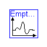
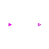
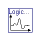
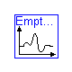
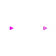
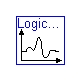


 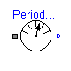
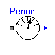

 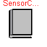
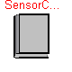
Information
The models in this package are taken from
Chapter 7 of:
'Introduction to Physical Modeling with Modelica'
by Michael Tiller

Modelica definition
block And
Modelica.Blocks.Interfaces.BooleanInPort inPort1(n=1);
Modelica.Blocks.Interfaces.BooleanInPort inPort2(n=1);
Modelica.Blocks.Interfaces.BooleanOutPort outPort(n=1);
equation
outPort.signal = inPort1.signal and inPort2.signal;
end And;
Parameters
| Name | Default | Description |
|---|
| m | 1.0 | Mass of the ball [kg] |
| c | 1e+4 | Compliance [N/m] |
| d | 20 | Damping [N/(m.s)] |
| r | 0.02 | Radius of the ball [m] |
Modelica definition
model BouncingBall1
extends BookExamples.Icons.RunnableExample;
import Modelica.SIunits;
parameter SIunits.Mass m=1.0 "Mass of the ball";
parameter Real c(final unit="N/m") = 1e+4 "Compliance";
parameter Real d(final unit="N/(m.s)") = 20 "Damping";
parameter SIunits.Radius r=0.02 "Radius of the ball";
SIunits.Height h(start=5.0) "Height of the ball center";
SIunits.Velocity v "Velocity of the ball";
SIunits.Acceleration a "Acceleration of the ball";
SIunits.Force f "Force on the ball";
equation
v = der(h);
a = der(v);
m*a = f - m*Modelica.Constants.g_n;
f = if h <= r then -c*(h - r) - d*v else 0.0;
end BouncingBall1;
Parameters
| Name | Default | Description |
|---|
| m | 1.0 | Mass of the ball [kg] |
| c_r | .725 | Coef. of restitution |
| r | 0.02 | Radius of the ball [m] |
Modelica definition
model BouncingBall2
extends BookExamples.Icons.RunnableExample;
import Modelica.SIunits;
parameter SIunits.Mass m=1.0 "Mass of the ball";
parameter Real c_r=.725 "Coef. of restitution";
parameter SIunits.Radius r=0.02 "Radius of the ball";
SIunits.Height h(start=5.0) "Height of the ball center";
SIunits.Velocity v "Velocity of the ball";
SIunits.Acceleration a "Acceleration of the ball";
equation
v = der(h);
a = der(v);
m*a = -m*Modelica.Constants.g_n;
when h <= r then
reinit(v, -c_r*pre(v));
end when;
end BouncingBall2;
Parameters
| Name | Default | Description |
|---|
| m | 1 | Mass of the ball [kg] |
| c_r | 0.725 | Coefficient of restitution |
| r | 1e-3 | Radius of the ball [m] |
Modelica definition
model BouncingBall3
extends BookExamples.Icons.RunnableExample;
import Modelica.SIunits;
parameter SIunits.Mass m=1 "Mass of the ball";
parameter Real c_r=0.725 "Coefficient of restitution";
parameter SIunits.Radius r=1e-3 "Radius of the ball";
SIunits.Height h(start=5.0) "Height of the ball center";
SIunits.Velocity v "Velocity of the ball";
SIunits.Acceleration a "Acceleration of the ball";
Boolean bouncing(start=true) "Is the ball to still be bouncing?";
Boolean impact "Indicates when impact occurs";
equation
v = der(h);
a = der(v);
m*a = if bouncing then -m*Modelica.Constants.g_n else 0;
algorithm
impact := h <= r;
when {impact,impact and v <= 0} then
if edge(impact) then
bouncing := pre(v) <= 0;
reinit(v, -c_r*pre(v));
else
reinit(v, 0.0);
bouncing := false;
end if;
end when;
end BouncingBall3;

Parameters
| Name | Default | Description |
|---|
| divisions | 4 | |
| sample_interval | 0.1 | [s] |
Modelica definition
model CountingSensor
import Modelica.Mechanics.Rotational;
extends Rotational.Interfaces.AbsoluteSensor;
parameter Integer divisions=4;
parameter Modelica.SIunits.Time sample_interval=0.1;
protected
constant Real pi=Modelica.Constants.pi;
parameter Modelica.SIunits.Angle trigger_interval=2*pi/divisions;
Integer count;
Real s;
equation
flange_a.tau = 0;
s = Modelica.Math.sin(flange_a.phi*divisions);
algorithm
when initial() then
count := 0;
end when;
when s >= 0 then
count := pre(count) + 1;
end when;
when sample(sample_interval, sample_interval) then
count := 0;
outPort.signal[1] := (pre(count) + 1)*trigger_interval/sample_interval;
end when;
end CountingSensor;
Modelica definition
model EmptyingTank1
Real x;
equation
der(x) = if x > 0 then -(x^.5) else 0.0;
end EmptyingTank1;
Modelica definition
model EmptyingTank2
Real x;
Boolean cond;
equation
cond = x > 0;
der(x) = if cond then -(x^.5) else 0.0;
end EmptyingTank2;
Modelica definition
model EmptyingTank3
extends BookExamples.Icons.RunnableExample;
Real x(start=2);
equation
der(x) = noEvent(if x > 0 then -(x^.5) else 0.0);
end EmptyingTank3;

Parameters
| Name | Default | Description |
|---|
| c | 1 | lag time constant |
| threshold | .7 | logical threshold |
Modelica definition
block Lag
parameter Real c=1 "lag time constant";
parameter Real threshold=.7 "logical threshold";
Modelica.Blocks.Interfaces.BooleanInPort inPort(n=1);
Modelica.Blocks.Interfaces.BooleanOutPort outPort(n=1);
protected
Real state "Continuous state of the wire";
equation
c*der(state) = if inPort.signal[1] then 1 - state else -state;
outPort.signal[1] = state >= threshold;
end Lag;

Modelica definition
model LogicCircuit
extends BookExamples.Icons.RunnableExample;
import BS = Modelica.Blocks.Sources;
BS.BooleanPulse i1(width={50}, period={2});
BS.BooleanPulse i2(width={50}, period={4});
BS.BooleanPulse i3(width={50}, period={8});
And and1;
And and2;
Or or1;
Not not1;
Not not2;
Boolean o1;
Boolean o2;
equation
// o1
connect(i3.outPort, and1.inPort2);
connect(not1.outPort, or1.inPort1);
connect(i2.outPort, or1.inPort2);
o1 = or1.outPort.signal[1];
// o2
connect(i1.outPort, not2.inPort);
connect(not2.outPort, and2.inPort1);
o2 = and2.outPort.signal[1];
connect(and2.inPort2, i2.outPort);
connect(and1.outPort, not1.inPort);
connect(i1.outPort, and1.inPort1);
end LogicCircuit;

Parameters
| Name | Default | Description |
|---|
| c | 1 | lag time constant |
Modelica definition
model LogicCircuitWithLag
extends BookExamples.Icons.RunnableExample;
parameter Real c=1 "lag time constant";
model Pulse
extends Modelica.Blocks.Sources.BooleanPulse;
end Pulse;
Pulse i1(period={2});
Pulse i2(period={4});
Pulse i3(period={8});
And and1;
And and2;
Or or1;
Not not1;
Not not2;
Boolean o1;
Boolean o2;
Lag and1_lag(c=c);
Lag and2_lag(c=c);
Lag or1_lag(c=c);
Lag not1_lag(c=c);
Lag not2_lag(c=c);
equation
connect(i1.outPort, and1.inPort1);
connect(i3.outPort, and1.inPort2);
connect(and1.outPort, and1_lag.inPort);
connect(and1_lag.outPort, not1.inPort);
connect(not1.outPort, not1_lag.inPort);
connect(i2.outPort, or1.inPort2);
connect(or1.outPort, or1_lag.inPort);
o1 = or1_lag.outPort.signal[1];
connect(i1.outPort, not2.inPort);
connect(not2.outPort, not2_lag.inPort);
connect(not2_lag.outPort, and2.inPort1);
connect(and2.outPort, and2_lag.inPort);
o2 = and2_lag.outPort.signal[1];
connect(not1_lag.outPort, or1.inPort1);
connect(i2.outPort, and2.inPort2);
end LogicCircuitWithLag;
Modelica definition
block LogicEquation
Modelica.Blocks.Interfaces.BooleanInPort i1(n=1);
Modelica.Blocks.Interfaces.BooleanInPort i2(n=1);
Modelica.Blocks.Interfaces.BooleanInPort i3(n=1);
Modelica.Blocks.Interfaces.BooleanOutPort o1(n=1);
Modelica.Blocks.Interfaces.BooleanOutPort o2(n=1);
equation
o1.signal = not (i1.signal and i3.signal) or i2.signal;
o2.signal = not i1.signal and i2.signal;
end LogicEquation;

Modelica definition
block Not
Modelica.Blocks.Interfaces.BooleanInPort inPort(n=1);
Modelica.Blocks.Interfaces.BooleanOutPort outPort(n=1);
equation
outPort.signal = not inPort.signal;
end Not;
Modelica definition
block Or
Modelica.Blocks.Interfaces.BooleanInPort inPort1(n=1);
Modelica.Blocks.Interfaces.BooleanInPort inPort2(n=1);
Modelica.Blocks.Interfaces.BooleanOutPort outPort(n=1);
equation
outPort.signal = inPort1.signal or inPort2.signal;
end Or;

Parameters
| Name | Default | Description |
|---|
| divisions | 4 | |
Modelica definition
model PeriodSensor
import Modelica.Mechanics.Rotational;
extends Rotational.Interfaces.AbsoluteSensor;
parameter Integer divisions=4;
protected
parameter Modelica.SIunits.Angle trigger_interval=2*Modelica.Constants.pi/divisions;
discrete Modelica.SIunits.Angle upper;
discrete Modelica.SIunits.Angle lower;
Modelica.SIunits.Time last_time;
equation
flange_a.tau = 0;
algorithm
when initial() or flange_a.phi >= upper or flange_a.phi <= lower then
upper := flange_a.phi + trigger_interval;
lower := flange_a.phi - trigger_interval;
last_time := time;
outPort.signal[1] := if initial() then 0.0 else trigger_interval/(time -
pre(last_time));
end when;
end PeriodSensor;

Parameters
| Name | Default | Description |
|---|
| bits | 4 | |
| sample_interval | 0.02 | [s] |
| min | -150 | [rad/s] |
| max | 150 | [rad/s] |
Modelica definition
model QuantizedSensor
import Modelica.SIunits;
import Modelica.Mechanics.Rotational;
extends Rotational.Interfaces.AbsoluteSensor;
parameter Integer bits=4;
parameter SIunits.Time sample_interval=0.02;
parameter SIunits.AngularVelocity min=-150;
parameter SIunits.AngularVelocity max=150;
SIunits.AngularVelocity w;
protected
parameter Real delta=(max - min)/2^bits;
Integer level;
equation
w = der(flange_a.phi);
flange_a.tau = 0;
algorithm
when sample(0, sample_interval) then
level := integer((w - min)/delta);
end when;
if level < 0 then
outPort.signal[1] := min;
elseif level >= 2^bits then
outPort.signal[1] := max;
else
outPort.signal[1] := level*delta + min;
end if;
end QuantizedSensor;

Parameters
| Name | Default | Description |
|---|
| sample_interval | 0.1 | [s] |
Modelica definition
model SampleHoldSensor
import Modelica.Mechanics.Rotational;
extends Rotational.Interfaces.AbsoluteSensor;
Modelica.SIunits.AngularVelocity w;
parameter Modelica.SIunits.Time sample_interval=0.1;
equation
w = der(flange_a.phi);
flange_a.tau = 0;
algorithm
when sample(0, sample_interval) then
outPort.signal[1] := w;
end when;
end SampleHoldSensor;

Parameters
| Name | Default | Description |
|---|
| sensor | redeclare Rotational.Sensors.SpeedSensor sensor | |
Modelica definition
model SensorBenchmark
import Modelica.Mechanics.Rotational;
import Modelica.Blocks;
Rotational.Inertia inertia(J=0.8);
Rotational.Fixed ground;
Rotational.Damper damper(d=0.2);
Rotational.Torque actuator;
replaceable Rotational.Sensors.SpeedSensor sensor extends
Rotational.Interfaces.AbsoluteSensor;
Blocks.Continuous.PI controller(k={100}, T={0.1});
Blocks.Math.Feedback feedback;
Blocks.Sources.Trapezoid ref(
offset={50},
rising={0.2},
width={0.25},
falling={0.2},
amplitude={50});
equation
connect(ground.flange_b, damper.flange_b);
connect(damper.flange_a, inertia.flange_b);
connect(actuator.flange_b, inertia.flange_a);
connect(sensor.flange_a, inertia.flange_a);
connect(controller.outPort, actuator.inPort);
connect(feedback.outPort, controller.inPort);
connect(sensor.outPort, feedback.inPort2);
connect(ref.outPort, feedback.inPort1);
end SensorBenchmark;
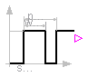
Parameters
| Name | Default | Description |
|---|
| width[:] | {50} | Widths of pulses in % of period |
| period[:] | {1} | Times for one period [s] |
| startTime[:] | {0} | Iime instants of first pulse [s] |
Modelica definition
model Pulse
extends Modelica.Blocks.Sources.BooleanPulse;
end Pulse;
HTML-documentation generated by Dymola Wed Sep 10 16:47:46 2003
.
 BookExamples.Chapter7.LogicCircuitWithLag.Pulse
BookExamples.Chapter7.LogicCircuitWithLag.Pulse